| In addition to the 20 standard amino
acids that are common in all proteins, other amino acids
have been found as components of only certain types of
proteins (Fig. 5-8a). Each of these is derived from one
of the 20 standard amino acids, in a modification
reaction that occurs after the standard amino acid has
been inserted into a protein. Among the nonstandard amino
acids are 4-hydroxyproline, a derivative
of proline, and 5-hydroxylysine; the
former is found in plant cell-wall proteins, and both are
found in the fibrous protein collagen of connective
tissues. N-Methyllysine is found in
myosin, a contractile protein of muscle. Another
important nonstandard amino acid is γ-carboxyglutamate,
found in the blood-clotting protein prothrombin as well
as in certain other proteins that bind Ca2+ in their
biological function. More complicated is the nonstandard
amino acid desmosine, a derivative of
four separate lysine residues, found in the fibrous
protein elastin. Selenocysteine contains
selenium rather than the oxygen of serine, and is found
in glutathione peroxidase and a few other proteins. Some 300 additional amino acids have been found in cells and have a variety of functions but are not substituents of proteins. Ornithine and citrulline (Fig. 5-8b) deserve special note because they are key intermediates in the biosynthesis of arginine and in the urea cycle. These pathways are described in Chapters 21 and 17, respectively. |
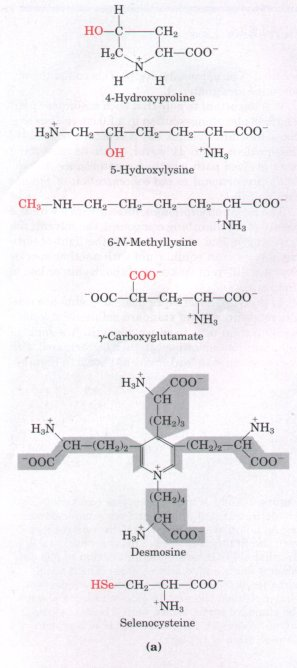 |
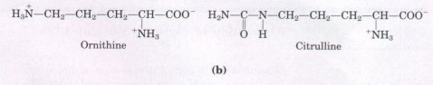
Figure 5-8 (a) Some nonstandard amino acids found in proteins; all are derived from standard amino acids. The extra functional groups are shown in red. Desmosine is formed from four residues of lysine, whose carbon backbones are shaded in gray. Selenocysteine is derived from serine. (b) Ornithine and citrulline are intermediates in the biosynthesis of arginine and in the urea cycle. Note that two systems are used to number carbons in the naming of these amino acids. The α, β,γ system used for γ-carboxyglutamate begins at the α carbon (see Fig. 5-2) and extends into the R group. The α-carboxyl group is not included. In contrast, the numbering system used to identify the modified carbon in 4-hydroxyproline, 5-hydroxylysine, and 6-N-methyllysine includes the α-carboxyl carbon, which is designated carbon 1 (or C-1).
When a crystalline amino acid, such as alanine, is dissolved in water, it exists in solution as the dipolar ion, or zwitterion, which can act either as an acid (proton donor):
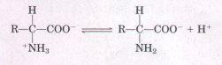
or as a base (proton acceptor):
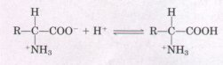
Substances having this dual nature are amphoteric and are often called ampholytes, from "amphoteric electrolytes." A simple monoamino monocarboxylic α-amino acid, such as alanine, is actually a diprotic acid when it is fully protonated, that is, when both its carboxyl group and amino group have accepted protons. In this form it has two groups that can ionize to yield protons, as indicated in the following equation:
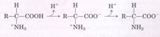
Titration involves the gradual addition or removal of protons. Figure 5-9 shows the titration curve of the diprotic form of glycine. Each molecule of added base results in the net removal of one proton fromone molecule of amino acid. The plot has two distinct stages, each corresponding to the removal of one proton from glycine. Each of the two stages resembles in shape the titration curve of a monoprotic acid, such as acetic acid ( see Fig. 4-10 ), and can be analyzed in the same way. At very low pH, the predominant ionic species of glycine is +H3N-CH2-COOH, the fully protonated form. At the midpoint in the first stage of the titration, in which the -COOH group of glycine loses its proton, equimolar concentrations of proton-donor (+H3N-CH2-COOH) and proton-acceptor (+H3N-CH2-COO- ) species are present. At the midpoint of a titration (see Fig. 4-11), the pH is equal to the pKa , of the protonated group being titrated. For glycine, the pH at the midpoint is 2.34, thus its -COOH group has a pKa of 2.34. [Recall that pH and pKa, are simply convenient notations for proton concentration and the equilibrium constant for ionization, respectively (Chapter 4). The pKa, is a measure of the tendency of a group to give up a proton, with that tendency decreasing tenfold as the pKa increases by one unit. ] As the titration proceeds, another important point is reached at pH 5.97. Here there is a point of inflection, at which removal of the first proton is essentially complete, and removal of the second has just begun. At this pH the glycine is present largely as the dipolar ion +H3N-CH2-COO- . We shall return to the significance of this inflection point in the titration curve shortly. |
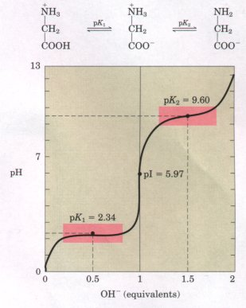 Figure 5-9 The titration curve of 0.1 M glycine at 25 ?. The ionic species predominating at key points in the titration are shown above the graph. The shaded boxes, centered about pK1 = 2.34 and pK2 = 9.60, indicate the regions of greatest buffering power. |
The second stage of the titration corresponds to the removal of a proton from the -NH3 + group of glycine. The pH at the midpoint of this stage is 9.60, equal to the pKa for the -NH3 group. The titration is complete at a pH of about 12, at which point the predominant form of glycine is H2N-CH2-COO-.
From the titration curve of glycine we can derive several important pieces of information. First, it gives a quantitative measure of the pKa of each of the two ionizing groups, 2.34 for the -COOH group and 9.60 for the -NH3+ group. Note that the carboxyl group of glycine is over 100 times more acidic (more easily ionized) than the carboxyl group of acetic acid, which has a pKa, of 4.76. This effect is caused by the nearby positively charged amino group on the α-carbon atom, as described in Figure 5-10.
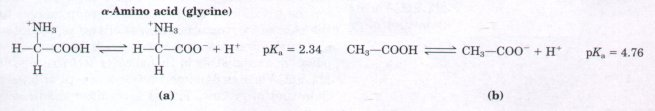
Figure 5-10 (a) Interactions between the α-amino and α-carboxyl groups in an a-amino acid. The nearby positive charge of the -NH3+ group makes ionization of the carboxyl group more likely (i.e., lowers the pKa for -COOH). This is due to a stabilizing interaction between opposite charges on the zwitterion and a repulsive interaction between the positive charges of the amino group and the departing proton. (b) The normal pKa for a carboxyl group is approximately 4.76, as for acetic acid.
The second piece of information given by the titration curve of glycine (Fig. 5-9) is that this amino acid has two regions of buffering power (see Fig. 4-12). One of these is the relatively flat portion of the curve centered about the first pKa of 2.34, indicating that glycine is a good buffer near this pH. The other buffering zone extends for ~1.2 pH units centered around pH 9.60. Note also that glycine is not a good buffer at the pH of intracellular fluid or blood, about 7.4.
The Henderson-Hasselbalch equation (Chapter 4) can be used to calculate the proportions of proton-donor and proton-acceptor species of glycine required to make a buffer at a given pH within the buffering ranges of glycine; it also makes it possible to solve other kinds of buffer problems involving amino acids (see Box 4-2).
Another important piece of information derived from the titration curve of an amino acid is the relationship between its net electric charge and the pH of the solution. At pH 5.97, the point of inflection between the two stages in its titration curve, glycine is present as its dipolar form, fully ionized but with no net electric charge (Fig. 5-9). This characteristic pH is called the isoelectric point or isoelectric pH, designated pI or pHI. For an amino acid such as glycine, which has no ionizable group in the side chain, the isoelectric point is the arithmetic mean of the two pKa values:
pI = (pK1 + pK2 )/2
which in the case of glycine is
pI= (2.34+9.60)/2=5.97
As is evident in Figure 5-9, glycine has a net negative charge at any pH above its pI and will thus move toward the positive electrode (the anode) when placed in an electric field. At any pH below its pI, glycine has a net positive charge and will move toward the negative electrode, the cathode. The farther the pH of a glycine solution is from its isoelectric point, the greater the net electric charge of the population of glycine molecules. At pH 1.0, for example, glycine exists entirely as the form +H3N-CH2-COOH, with a net positive charge of 1.0. At pH 2.34, where there is an equal mixture of +H3N-CH2-COOH and +H3N-CH2-COO-, the average or net positive charge is 0.5. The sign and the magnitude of the net charge of any amino acid at any pH can be predicted in the same way.
This information has practical importance. For a solution containing a mixture of amino acids, the different amino acids can be separated on the basis of the direction and relative rate of their migration when placed in an electric field at a known pH.
| The shared properties of many amino
acids permit some simplifying generalizations about the
acid-base behavior of different classes of amino acids. All amino acids with a single α-amino group, a single α-carboxyl group, and an R group that does not ionize have titration curves resembling that of glycine (Fig. 5-9). This group of amino acids is characterized by having very similar, although not identical, values for pKl (the pK of the -COOH group) in the range of 1.8 to 2.4 and for pK2 (of the -NH3+ group) in the range of 8.8 to 11.0 (Table 5-1). Amino acids with an ionizable R group (Table 5-1) have more complex titration curves with three stages corresponding to the three possible ionization steps; thus they have three pKa values. The third stage for the titration of the ionizable R group merges to some extent with the others. The titration curves of two representatives of this group, glutamate and histidine, are shown in Figure 5-11. The isoelectric points of amino acids in this class reflect the type of ionizing R groups present. For example, glutamate has a pI of 3.22, considerably lower than that of glycine. This is a result of the presence of two carboxyl groups which, at the average of their pKa values (3.22), contribute a net negative charge of -1 that balances the +1 contributed by the amino group. Similarly, the pI of histidine, with two groups that are positively charged when protonated, is 7.59 (the average of the pKa values of the amino and imidazole groups), much higher than that of glycine. |
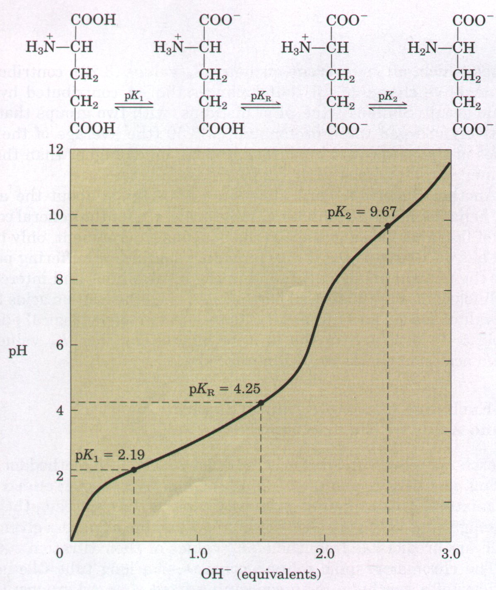 Figure 5-11 The titration curves of (a) glutamate and (b) histidine. The pKa of the R group is designated pKR. 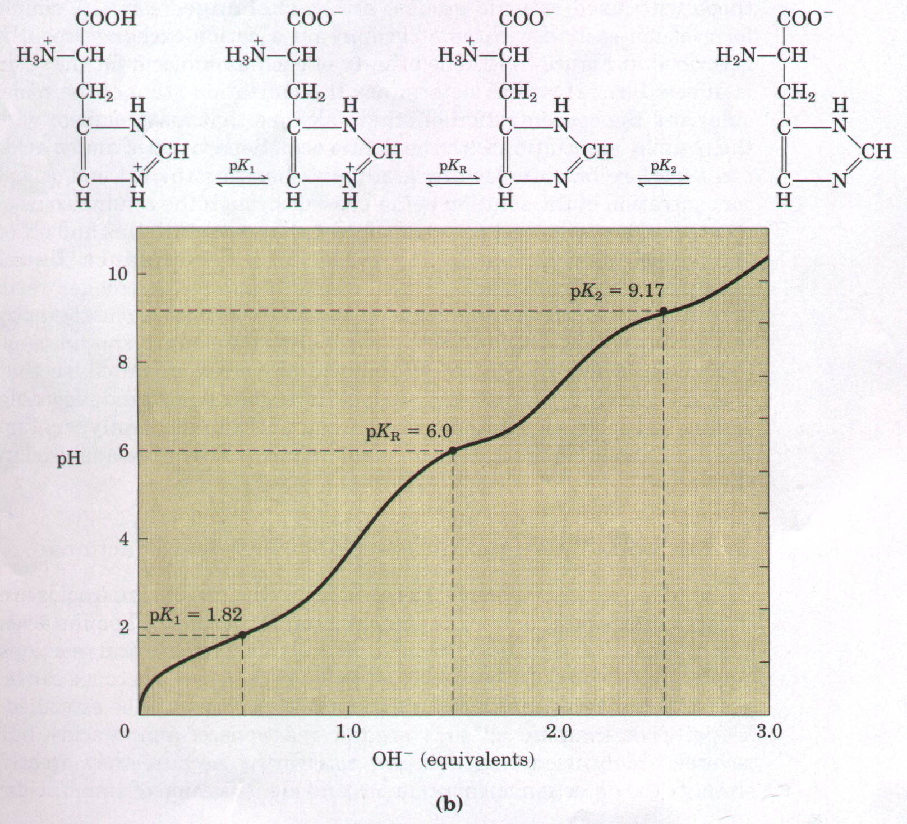 |
Another important generalization can be made about the acidbase behavior of the 20 standard amino acids. Under the general condition of free and open exposure to the aqueous environment, only histidine has an R group (pKa = 6.0) providing significant buffering power near the neutral pH usually found in the intracellular and intercellular fluids of most animals and bacteria. All the other amino acids have pKa values too far away from pH 7 to be effective physiological buffers (Table 5-1), although in the interior of proteins the pKa values of amino acid side chains are often altered.
Ion-exchange chromatography is the most widely used method for separating, identifying, and quantifying the amounts of each amino acid in a mixture. This technique primarily exploits differences in the sign and magnitude of the net electric charges of amino acids at a given pH, which are predictable from their pKa values or their titration curves.
The chromatographic column consists of a long tube filled with particles of a synthetic resin containing fixed charged groups; those with fixed anionic groups are called cation-exchange resins and those with fixed cationic groups, anion-exchange resins. A simple form of ion-exchange chromatography on a cation-exchange resin is described in Figure 5-12. The affinity of each amino acid for the resin is affected by pH (which determines the ionization state of the molecule) and the concentration of other salt ions that may compete with the resin by associating with the amino acid. Separation of amino acids can therefore be optimized by gradually changing the pH and/or salt concentration of the solution being passed through the column so as to create a pH or salt gradient. A modern enhancement of this and other chromatographic techniques is called high-performance liquid chromatography (HPLC). This takes advantage of stronger resin material and improved apparatus designed to permit chromatography at high pressures, allowing better separations in a much shorter time. For amino acids, the entire procedure has been automated, so that elution, collection of fractions, analysis of each fraction, and recording of data are performed automatically in an amino-acid analyzer. Figure 5-13 shows a chromatogram of an amino acid mixture analyzed in this way.
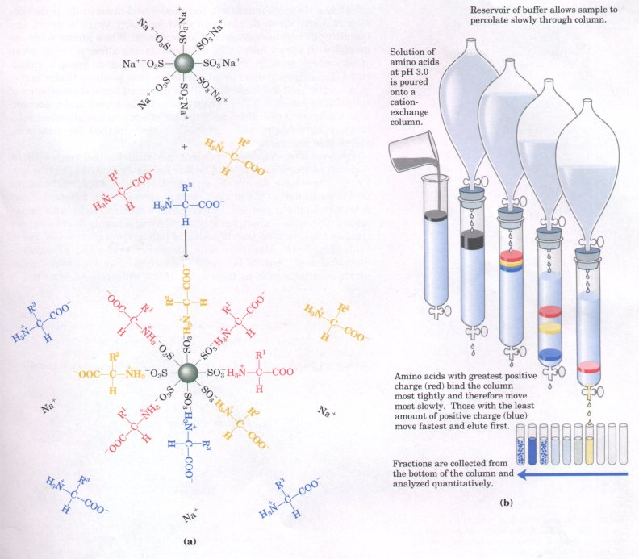
Figure 5-12 Ion-exchange chromatography. An example of a cation-exchange resin is presented. (a) Negatively charged sulfonate groups (-SO3- ) on the resin surface attract and bind cations, such as H+ , Na+ , or cationic forms of amino acids.(b) An acidic solution (pH 3.0) of the amino acid mixture is poured on a column packed with resin and allowed to percolate through slowly. At pH 3.0 the amino acids are largely cations with net positive charges, but they differ in the pKa, values of their R groups, and hence in the extent to which they are ionized and in their tendency to bind to the anionic resin. As a result, they move through the column at different rates.
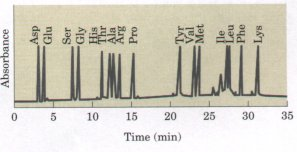 |
Figure 5-13 Automatically recorded high-performance liquid chromatographic analysis of amino acids on a cation-exchange resin. The area under each peak on the chromatogram is proportional to the amount of each amino acid in the mixture. |
As for all organic compounds, the chemical reactions of amino acids are those characteristic of their functional groups. Because all amino acids contain amino and carboxyl groups, all will undergo chemical reactions characteristic for these groups. For example, their amino groups can be acetylated or formylated, and their carboxyl groups can be esterified. We will not examine all such organic reactions of amino acids, but several widely used reactions are noteworthy because they greatly simplify the detection, measurement, and identification of amino acids.
| One of the most important, technically
and historically, is the ninhydrin reaction, which has
been used for many years to detect and quantify microgram
amounts of amino acids. When amino acids are heated with
excess ninhydrin, all those having a free α-amino group
yield a purple product. Proline, in which the a-amino
group is substituted (forming an imino group), yields a
yellow product. Under appropriate conditions the
intensity of color produced (optical absorbance of the
solution; see Box 5-1) is proportional to the amino acid
concentration. Comparing the absorbance to that of
appropriate standard solutions is an accurate and
technically simple method for measuring amino acid
concentration. Several other convenient reagents are available that react with the α-amino group to form colored or fluorescent derivatives. Unlike ninhydrin, these have the advantage that the intact R group of the amino acid remains part of the product, so that derivatives of different amino acids can be distinguished. Fluorescamine reacts rapidly with amino acids and provides great sensitivity, yielding a highly fluorescent derivative that permits the detection of nanogram quantities of amino acids (Fig. 5-14). Dabsyl chloride, dansyl chloride, and 1-fluoro-2,4-dinitrobenzene (Fig. 5-14) yield derivatives that are stable under harsh conditions such as those used in the hydrolysis of proteins. |
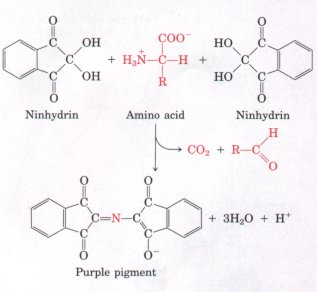 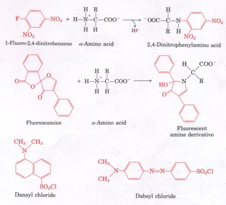 Figure 5-14 Reagents that react with the α-amino group of amino acids. The reactions producing 2,4-dinitrophenyl and fluorescamine derivatives are illustrated. The reactions of dansyl chloride and dabsyl chloride are similar to that of 1-fluoro-2,4-dinitrobenzene (Sanger's reagent). Because the derivatives of these reagents absorb light, they greatly facilitate the detection and quantification of the amino acids. |